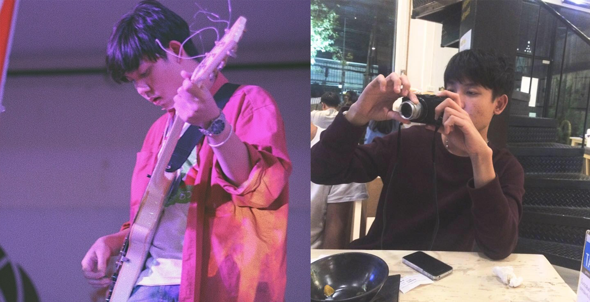

นาย กานต์ชนก กันตะกะนิษฐ์ (เฟรม) อายุ 23 ปี
จบการศึกษาจาก มหาวิทยาลัย เทคโนโลยีราชมงลล้านนา เชียงใหม่ คณะ ศิลปกรรมและสถาปัตยกรรมศาสตร์ เอก นิเทศศิลป์
จบการศึกษาจาก มหาวิทยาลัย เทคโนโลยีราชมงลล้านนา เชียงใหม่ คณะ ศิลปกรรมและสถาปัตยกรรมศาสตร์ เอก นิเทศศิลป์
มีความสนใจในด้าน ดนตรี Motion graphic และ sound design เป็นคนพร้อมที่จะเรียนรู้สิ่งใหม่ๆเสมอ และพัฒนาตัวเองไปเรื่อยๆ
